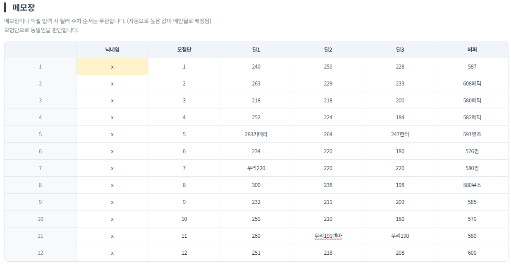
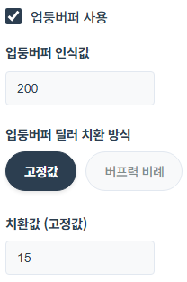
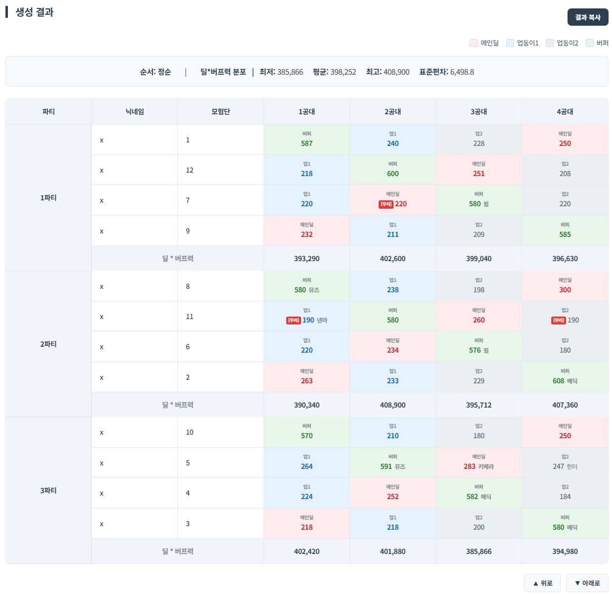

엑셀 혹은 사이트 내의 메모장에서 데이터를 복사하여 입력창에 붙여넣습니다.
조합기는 '모험단'을 기준으로 사용자들을 구분합니다.
닉네임은 구분을 편하게 하기 위해 존재하지만, 형식 상 반드시 입력해야하며 중복또한 가능합니다.

또한 세트 구분과 직업명 등의 주석을 달 수 있습니다.
(세트는 '수치 앞'에 기입하여 각 파티에 1캐릭터만 배치되게 합니다. 직업명 등 주석은 '수치 뒤'에 기입하여 파티 조합 결과에 표시할 수 있습니다.)
예:무리190넨마
파티 조합결과에 다음과 같이 표시됩니다.
균등 분배 또는 몰빵 분배를 선택할 수 있습니다.
'균등 분배'는 각 공대별 모든 파티가 가능한 균등한 딜*버프력 수치로 분배합니다.
'몰빵 분배'는 각 공대마다 1파티만을 기준으로 가장 딜*버프력 수치가 높게 분배하며, 2/3파티는 나머지 파티 구성에 따라 분배합니다.
체크박스를 통해 파티 배치 방식을 조정할 수 있습니다.
체크 해제 시, 딜러의 순서와 상관없이 최대한 균등하게 배치합니다.
체크 시, 흔히 알려진 방식대로 파티를 조합합니다(버퍼 1234, 메인딜 4321 순서)
혼합:1~2번은 업둥이1, 3~4번은 업둥이2 먼저 배치합니다
정순:업둥이1을 먼저 배치합니다 | 역순:업둥이2를 먼저 배치합니다
(딜러의 수치에 따라 딜러를 구분합니다(메인딜>업둥이1>업둥이2)

인식값: 해당 수치보다 높으면 업둥버퍼로 인식하며, 고정값|버프력 비례로 딜러로 치환합니다.
고정값: 모든 업둥버퍼는 치환값의 딜러로 치환됩니다.
버프력 비례 배율: 버프력에 배율을 곱하여 딜러로 치환됩니다.
(예:40000버퍼 x 0.05 = 2000딜러로 치환)
최저값: 조합 중 가장 약한 파티의 값이 가장 높은 결과(파티딜이 다소 편차가 클 수 있습니다.)
표준편차: 조합 중 파티의 평균 표준편차가 가장 적은 결과(파티들의 딜이 균등합니다.)
엑셀 표를 켜기 번거롭다면, 메모장에서 입력 후 그대로 복사하여 붙여넣기해서 사용할 수 있습니다.
결과를 복사하여 텍스트만을 추출하여 엑셀에 용이하게 붙여넣을 수 있습니다.
파티 및 사용자를 클릭하여 하단의 '위로'과 '아래로'로 순서를 바꿀 수 있습니다.
